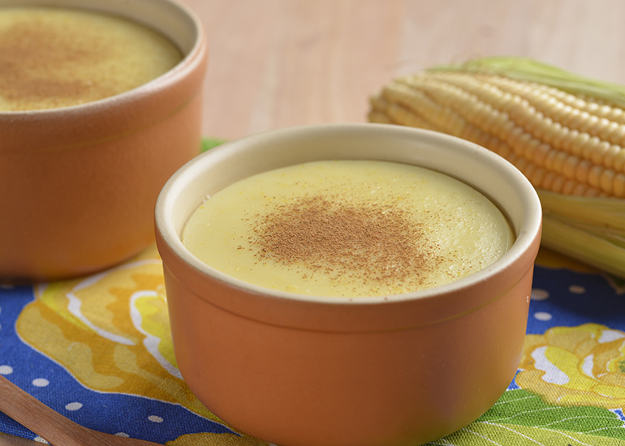

Receitas típicas de Minas Gerais

A gastronomia do Nordeste é um convite para saborear a cultura e os ingredientes frescos dessa região encantadora.Essas comidas não são só deliciosas, são uma verdadeira viagem ao coração do Nordeste, onde cada prato tem um pedaço da história e da cultura da região. Quem prova, se apaixona!
Salgados
Feijão Tropeiro

Você conhece a história dessa iguaria? essa é uma típica receita dos tropeiros que usavam o feijão sem caldo (para não estragar), pedaços de carne do sol e toucinho, que são originários da cozinha mineira, para fazer uma boa refeição. foi assim que surgiu o feijão tropeiro e hoje há receitas que adicionam bacon, linguiça calabresa, ovos e farinha de mandioca, todos que possuem um prazo de validade maior para viagens ou são defumados.
Ingredientes
Este é o conteúdo que estava oculto e agora é exibido após o clique.
Tutu de Feijão

Essa também é uma receita tradicional que chegou em Minas junto com os Portugueses. à época, a ideia surgiu para aumentar a quantidade de comida com a farinha, sem aumentar os ingredientes com o feijão e o sal, devido ao preço alto da época..
Ingredientes
Este é o conteúdo que estava oculto e agora é exibido após o clique.
Frango com Quiabo

apesar da comida mineira ser rica em sabores, ela pode ser bem simples de se fazer. o frango com quiabo é um ótimo exemplo! pra fazer, basta temperar o seu frango e prepará-lo deixando um pouco de caldo. em paralelo, refogue o quiabo inteiro ou partido em pequenas rodelas. depois que o frango estiver cozido, adicione o quiabo e deixe cozinhar até engrossar um pouco o caldo.
Ingredientes
Este é o conteúdo que estava oculto e agora é exibido após o clique.
Vaca Atolada

Outra refeição que veio das viagens entre os estados é a vaca atolada que chegou em minas junto com as comitivas de boiadeiros. a história é que os peões viajavam com pedaços de carne mergulhados na gordura e pelo caminho apanhavam as mandiocas.
Ingredientes
Este é o conteúdo que estava oculto e agora é exibido após o clique.
Acaraje

A canjiquinha é feita com milho quebrado, e é cozida junto com carne de sol desfiada. É um prato simples e muito saboroso, bem comum em festas típicas.
Ingredientes
Este é o conteúdo que estava oculto e agora é exibido após o clique.
Cozido Mineiro

Um prato de carne de boi, frango, legumes como batata-doce, cenoura e abóbora, cozidos lentamente. Tem um sabor suave e é uma refeição bem nutritiva.
Ingredientes
Modo de preparo:
Corte a carne em cubos e tempere com o limão e o sal. Reserve.
Refogue a cebola e o alho no óleo e junte a carne.
Deixe cozinhar por 10 minutos, mexendo sempre.
Misture a água e o fubá e acrescente a mistura acima.
Rasgue a couve em pequenos pedaços e coloque-a na panela.
Acrescente os talos picados, deixando até engrossar.
Adicione a salsa/cebolinha e sirva em seguida.
Dica: substitua, se preferir, a couve por folhas de espinafre.
Petiscos
Pão de Queijo

Não podemos deixar de fora o mais famoso e amado: o pão de queijo mineiro. ele surgiu como um pãozinho mesmo, no século 18, e misturava farinha de mandioca (que depois passou a se chamar polvilho) e restos de queijo que ficaram endurecidos.
Ingredientes
Este é o conteúdo que estava oculto e agora é exibido após o clique.
Biscoito de Polvilho

Um biscoito leve e crocante, feito com polvilho azedo e doce, tipicamente servido no café da manhã ou lanche da tarde.
Ingredientes
Este é o conteúdo que estava oculto e agora é exibido após o clique.
Doces
Curau
Sobremesa feita com milho verde, leite, açúcar e canela. Fica cremoso e é uma ótima pedida para o inverno.
Ingredientes
Este é o conteúdo que estava oculto e agora é exibido após o clique.
Ambrosia

A ambrosia, conhecida como a comida dos deuses na mitologia grega, ganha um sabor especial com esta receita. As especiarias e o limão complementam o doce, trazendo um toque aromático divino. Embora a versão tradicional portuguesa leve apenas ovos e açúcar, essa adaptação enriquece ainda mais o preparo.
Ingredientes
Este é o conteúdo que estava oculto e agora é exibido após o clique.